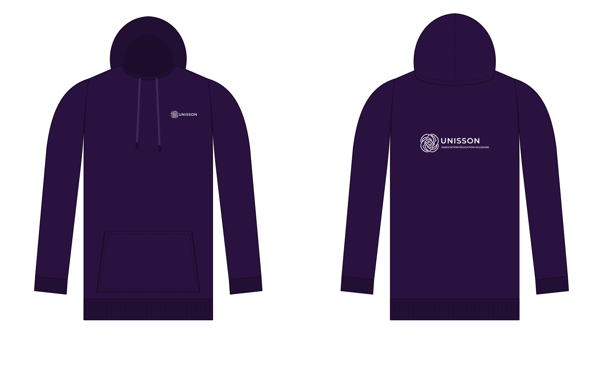
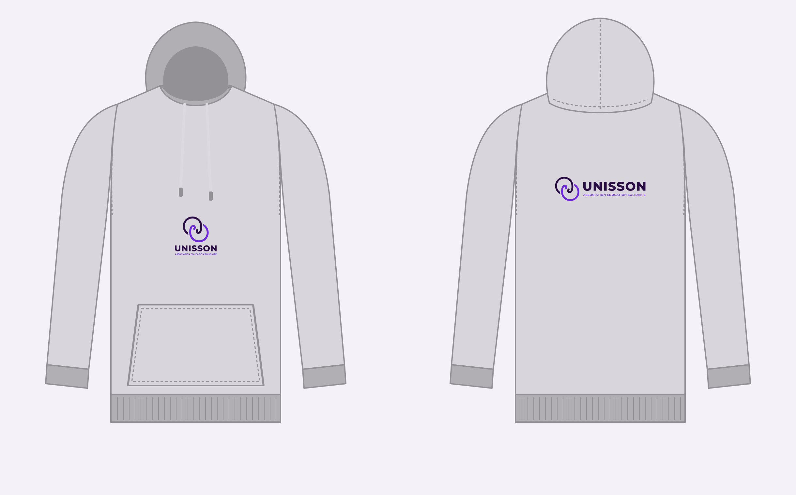
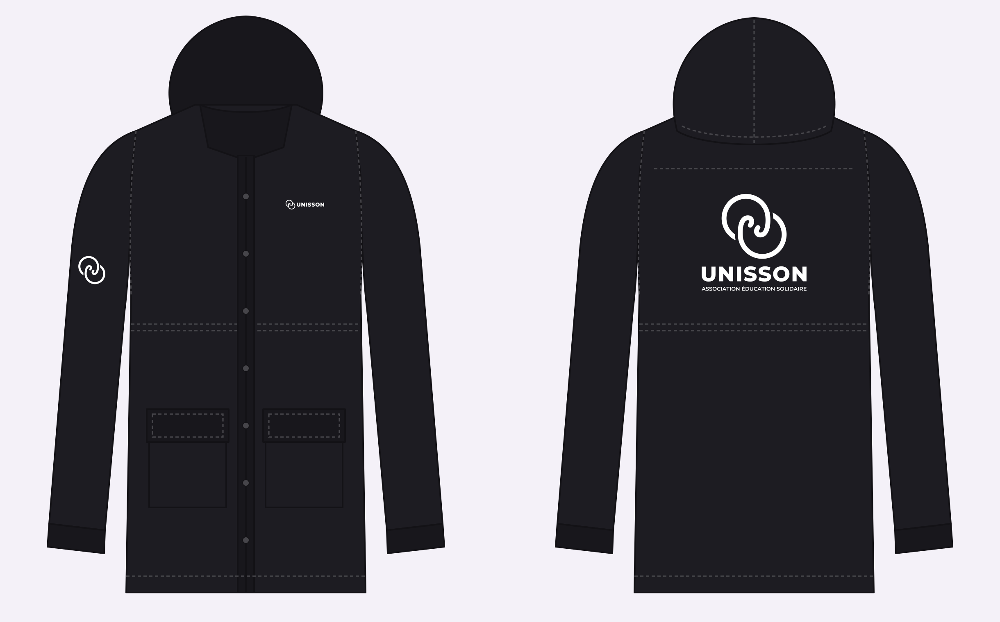
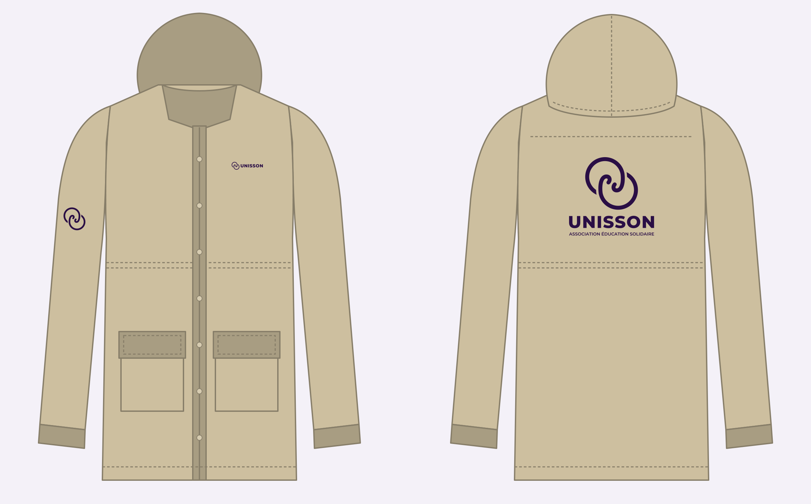

Hoodie indigo · logo blanc

FACEDOS
| Face | Logo cœur, 95 mm, poitrine gauche · coeur-blanc |
| Dos | Logo horizontal, 280 mm, 8 cm sous le col · horizontal-blanc |
| Technique | Flex blanc mat ou sérigraphie 1 couleur (blanc couvrant) |
| Usage | Tenue des bénévoles, maraudes, événements |
Hoodie gris chiné · logo couleur

FACEDOS
| Face | Écusson centré, 130 mm, sous les cordons · ecusson-couleur |
| Dos | Logo horizontal, 280 mm · horizontal-couleur |
| Technique | DTF ou sérigraphie 2 couleurs (flex : écusson ≥ 130 mm) |
| Usage | Merchandising, adhérents, soutiens |
Parka noire · logo blanc

FACEDOS
| Face | Logo cœur, 95 mm · symbole 70 mm sur la manche gauche · -blanc |
| Dos | Écusson, 260 mm, centré sous l'empiècement · ecusson-blanc |
| Technique | Flex nylon/softshell (basse température) ou transfert DTF adapté aux tissus déperlants. Pas de sérigraphie sur membrane. |
| Usage | Maraudes de nuit, hiver : version réfléchissante possible (flex rétroréfléchissant argent) |
Parka sable · logo indigo

FACEDOS
| Face | Logo cœur, 95 mm · symbole 70 mm sur la manche · -mono |
| Dos | Écusson, 260 mm · ecusson-mono |
| Technique | Flex indigo 1 couleur ou broderie du symbole sur la manche (≥ 50 mm) |
| Usage | Équipe permanente, représentation institutionnelle |